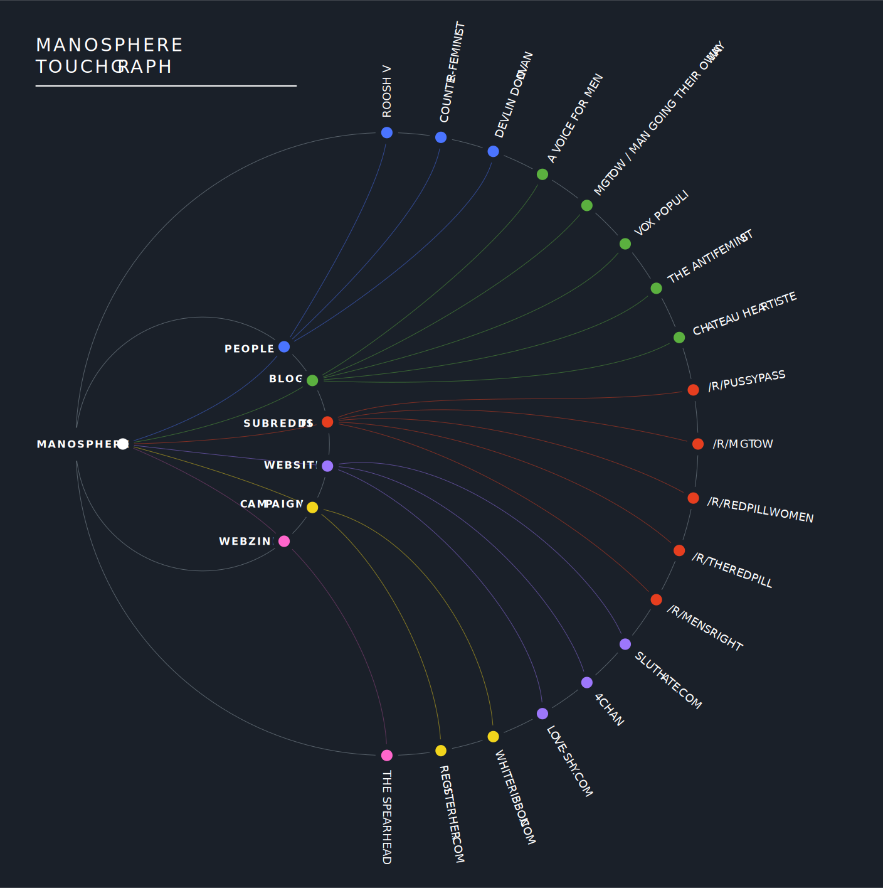
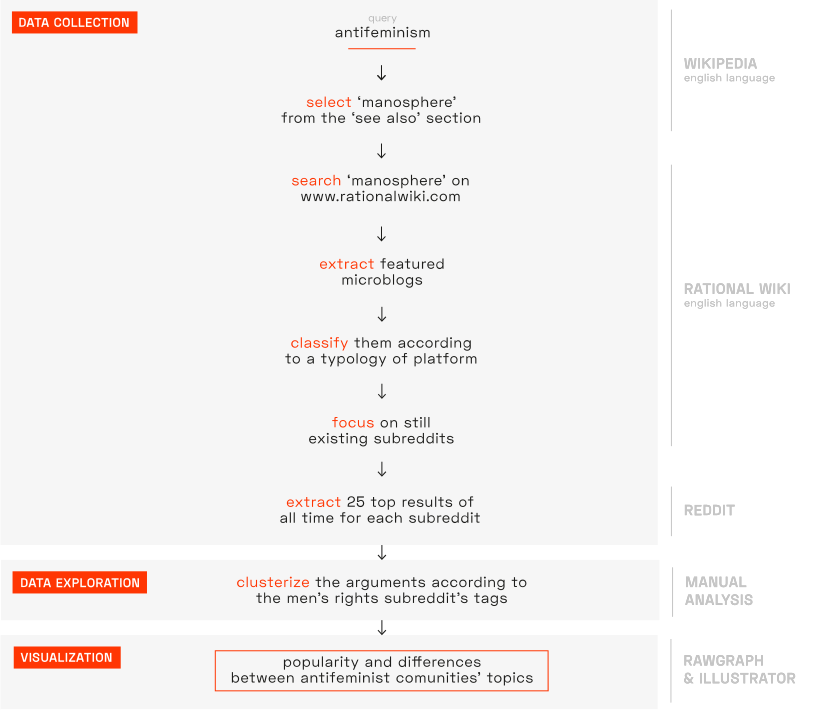

Description
The previous protocol pushed us to investigate more the counterpart of the feminist movement and its arguments. The Hyperbolic tree graph’s intent is to show the platforms related to the term manosphere that it’s defined as an informal network of blog, forums and websites where users focus on issues relating to men and masculinity.

The alluvial chart focuses on the subreddit section of the manosphere as it was possible to compare different pages. The visualization’s objective is to explore the antifeminist topics and to underline the differences between how the themes are treated in the different subreddits by showing the variation of frequency the communities treat different topics. For example the RedPill subreddit contains mostly advices for facing everyday life for young men, while PussyPass focuses on the double standards that make women the privileged class. We also compared the number of users for each subreddit, discovering that the biggest one, /r/theredpill, is the most subscribed but it’s also the only one quarantined, because of its shocking or highly offensive content.
Protocol

We searched “antifeminism” on Wikipedia and we analyzed the See also section focusing on the “manosphere” page as it was described as the counterpart of feminism. By looking for “manosphere” on the RationalWiki page we were able to recreate the map of the platforms where the antifeminists talk the most. We followed the links in the “subreddit” section and we scraped the number of users and the top 25 threads of all time for each. Some of the pages linked were shut down so they weren’t taken into consideration. In order to clusterize the themes of the blogs we decided to use the tags used by the “mensrights” subreddit and apply them to the posts of the other threads. This allowed us to find differences between subreddits using the specific language of the users of these forums.